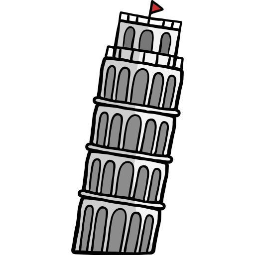
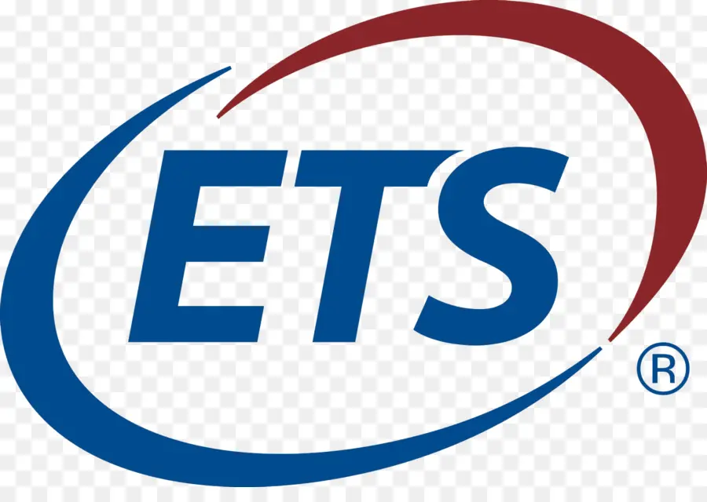
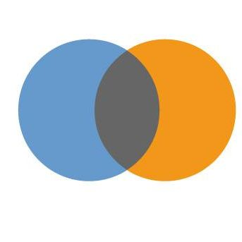

The OECD's PISA project assesses 15-year-olds' reading, math, and science skills in real-life contexts, along with contextual factors explaining performance differences. While ETS develops achievement assessments, our DIPF research team focuses on the contextual questionnaires.
What is PISA:  Who is ETS:  Who is DIPF: 
As a postdoc research associate on the PISA 2018 project, I optimized various questionnaires (e.g., teacher and student motivation scales) and evaluated scale quality using Classical Test Theory and Item Response Theory. My data analysis and presentation at the QEG meeting at ETS enabled questionnaire experts to finalize item decisions for all PISA contextual scales within two days.
The PISA field test data included multi-level datasets from over 70 countries, with weighting and proxy variables. Using R, Excel, and SPSS, I handled data cleaning, transformation, visualization, and analysis. Key R packages included dplyr for data cleaning and ggplot2 for visualization. Applied methods ranged from reliability and factor analysis to IRT-based DIF analysis and Hierarchical Linear Modeling.
I coordinated the adaptation and harmonization process for the PISA 2018 project, ensuring high comparability across over 70 national questionnaires. This involved close collaboration with national PM teams and ETS, requiring deep knowledge of each country’s educational system and stakeholder needs. I also identified deviations by thoroughly reviewing documentation and comparing analysis results.
Working for DIPF as contractor of ETS, we analyzed field test data and provided data-driven recommendations to refine items and scales for the main study.
I developed scales for motivation, the teacher questionnaire, and learning environment, using test theory to set evaluation criteria for item selection. My presentations enabled timely decisions by Questionnaire Experts.
I also proposed improvements to the scoring method, conducted comparative analyses, and published the findings in a Q1 journal.
Here is a similar R script to what I used: Go to scripts
The same codes or methods can also be used for developing/validating any kinds of questionnaires suitable for different segmentation groups.
Here is the publication link, which was based on the validity analysis of PISA data: How I evaluated the quality of scoring or coding methods
Field test data from different countries should be cleaned and merged, data quality should be checked and analysis should be conducted. Since we were also researchers, one of the aim was also to identify possible interesting research topics.
I focused on familiar scale topics, uncovering relationships between perceived learning environment, internal motivation, and learning outcomes.
R script for this topic can be seen here: Go to scripts
The same codes or methods (PCA, Structural equation modeling, factor analysis, multi-level regression, predictive modeling, mixed effect modeling, etc.) can be used for topics such as: Product Demand Forecasting, Brand Perception and Positioning Customer or User Satisfaction and Loyalty Analysis,Market Potential and Opportunity Analysis,Attitudinal and Behavioral Analysis,etc.
I have published the final result based on the multi-level large-scale data analysis: how motivation of individuals and their perception of environment influenced their achievement
With questionnaires from over 70 countries, ensuring comparability was challenging due to differing concepts. Adaptation and harmonization were essential to reduce cross-country variance, making concepts more comparable.
Achieving comparability required knowledge of global educational systems and skill in detecting differences through documentation analysis. This included comparing scaling documents across cycles, noting historical shifts, and assessing levels across countries. To evaluate concepts, we also gathered scale evaluations from national project managers' (NPM) perspectives.
R scripts visualizing the evaluation of NPMs to a scale: Go to scripts
We typically addressed NPMs' questions through thorough documentation review. Based on data-driven reports, PISA questionnaires across countries were deemed comparable.